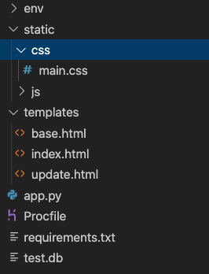
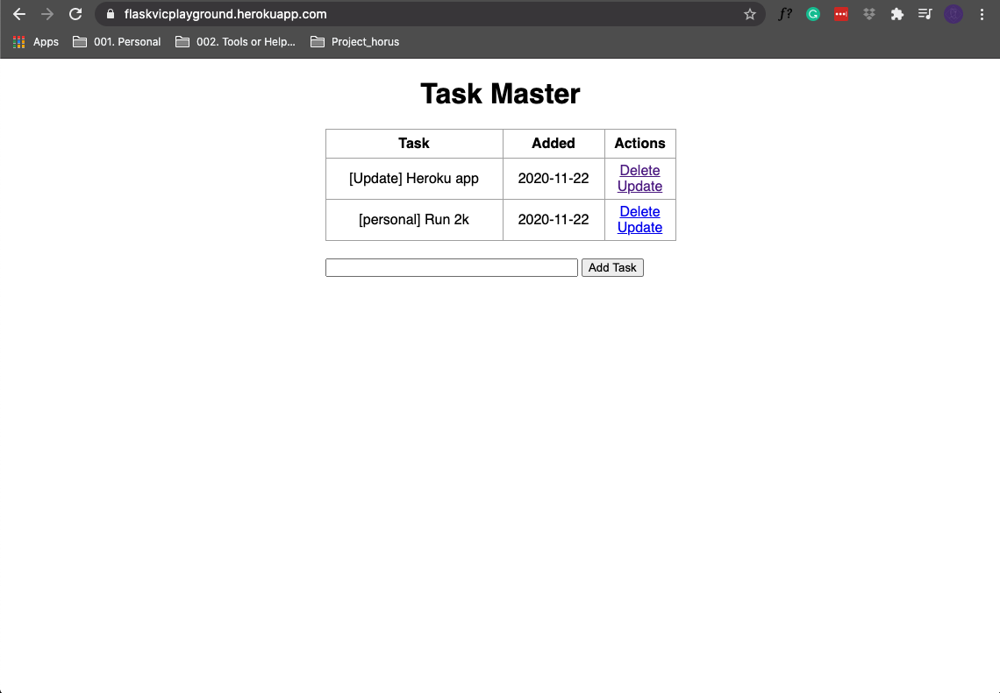
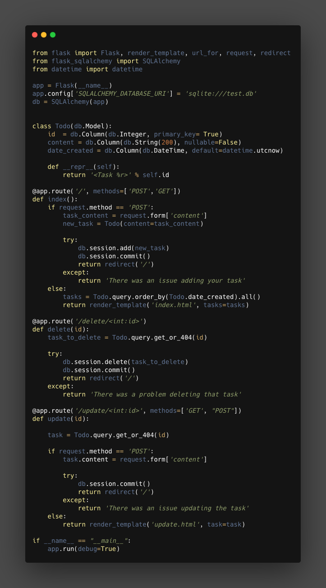

Quick & Dirty First App
This notes are based in the youtube video release by freecodecamp
The structure¶
a virtual environment is created thus the folder env, it contain all the documents and files need it to run the virtual environment
now the structure of the application is simple, we wont use blue prints a concept that is really important to create modular, efficient and reusable application, for that reason we will have all the logic running in one single document app.py this document will contain the model and the controllers, the views as always will be manage by the templates like in all Flask application these templates are in the folder templates ( we use the template inheritance of jinja2). We will have just a one single .css file in the folder static, and few other documents, requirements.txt for the requirements, the Procfile for Heroku deplayment and the SQLite database as test.db

how will looks like¶
after deploy in heroku and as a first version will look like live app

The app.ppy¶
The whole script will look like

Now we are going to go a bit deeper and check some of the details
Be aware that the script has if __name__ == '__main__' at the end
there we set the app to enable DEBUG as True
1 2 | |
so we can see the error during the development, in a real application the DEBUG must be set to False.
Imports¶
Here is just the typical imports
1 2 3 | |
From flask we will import
Flaskthe class and what we instanciate to create the app.render_templateFunction to render the view from the template in the folder templatesurl_forthis one more complex to explain but basically will create URI to specific resources, example URL for the .css file to be use in the base for the templates.requestto handle the request of the forms implemented in the templates.redirectTo redirect to a specific view after some action.SQLAlchemmyto handle everything related with the database.
Declaration app and database¶
Here we create the class object that represent Flask and we bind it with a database flavor and we create a database object
1 2 3 | |
The /// means relative path, for a direct or explicit path we need to use ////
Database¶
This step normally will be done after we create some of the logic or some of the controllers and views, but since it is good practice to put it first on the script, I decided to put it first in the notes
1 2 3 4 5 6 7 | |
Here there are two parts, the first one is the description of the model, what columns and what type of information. The second is just a method that will reply something every time we finish to add some new content, is just a responds to an action, the method is __repr__
note that in the first part, in the creation of the model we use datatime.utcnow to log the time of the creation of the task.
Controllers¶
For the controllers there will be 3:
1. The index and landing page.
2. The delete
3. The update
during development we will be creating controllers and views( templates) at the same time, since there are connected and they need each other, but in this case we are going to make a description of the controllers first and bellow in the next section we will check the views (templates).
Index¶
1 2 3 4 5 6 7 8 9 10 11 12 13 14 15 | |
@app.route('/', methods=['POST'.'GET']Is The decorator to create the root, if the user go tohttps://[ipaddress:port]/this controller will be executed, be aware that Flask by default use justGETso we need to specify the methods if we want to use something different, like in this case@app.route('/', methods=['POST', 'GET']).- The if statement will handle the request, if there is a
POSTrequest we will trigger the code to create a new task, later commit to the database, finally redirect to the same page where will display the information. Finally theelseit is important to mentioned since this is the one that contain the code that get the task from the database and that send to the viewindex.htmlin the variabletasks.
Delete¶
1 2 3 4 5 6 7 8 9 10 | |
here there are 2 important things:
- The decorator contain
<int:id>which means that it will be expecting a valueintfrom the variableid, example a URI likehttps://[domain]/delete/1. - A function
get_or_404(id)this function will get the information based in the id pass as parameter but if it is not correct or theiddoesn’t exit will return404.
Update¶
1 2 3 4 5 6 7 8 9 10 11 12 13 14 15 | |
It is similar to the other two controllers it will get some information on the URL, thus the decorator with the <int:id> and it will redirect to a new template to perform some actions using the id.
The Templates¶
There will be 3 templates;
base.htmlthis is the base template and all the other template will inherit form this one.indext.htmlit is the landing and is where most of the task and information will be displayupdate.htmlhere is where we will perform the updates, the button in the templateindex.htmlwith the name ofupdatewill redirect to this pages.
base.html¶
1 2 3 4 5 6 7 8 9 10 11 12 13 | |
- Here we are using the method
url_forto create a URI to the resources in the static folder, in this case will be the styles for the templates, in few works, the method will give me the path to the CSS file containing the styles. {% block body %} {% endblock %}is part of the jinja2 syntax, this will allow us to input content from other file in this location.
index.html¶
1 2 3 4 5 6 7 8 9 10 11 12 13 14 15 16 17 18 19 20 21 22 23 24 25 26 27 28 29 30 31 32 33 34 35 36 37 38 39 40 | |
{% extends 'base.html' %}this is how the inheritance is done, here I’m telling flask that this template inherit from thebase.htmltemplate.{% if tasks|legth <1 %}and{% endif %}hre i’m evaluating if a variabletasksis bigger than 1, thi sis part of the jinja2 syntax.{% block head %}...{% endblock %}and{% block body %} ... {% endblock %}this is how we input content in the templates.- on the block body we will fine more jinja2 syntax, in this case is on the table
<a href="/delete/{{task.id}}">Delete</a>and<a href="/update/{{task.id}}">Update</a>in this case what we tell Flask is that this links will use the controllersdeleteandupdaterespectively.
The static files¶
Here is not much to say, we will store the static files like stylesheet and javascript documents in this folder, in this example we have just .css files so there are the only that have some importance in this example, below i will add the css file,
1 2 3 4 5 6 7 8 9 10 11 12 13 14 15 16 17 18 19 20 21 22 23 24 25 26 27 28 29 30 31 32 33 34 35 | |
Deploy to heroku¶
The deployment to heroku will required a series of steps and the preparation of some extra documents
What we need¶
We need:
- account in Heroku
- The
CLIclient for Heroku - A library called
gunicorn - A file
Procfile
Procfile¶
The Procfile contain the following:
1 | |
Freeze the requirements¶
We need to run in the console the Freeze command to freeze the libraries version and we can sabe it to a file called requirement
1 | |
Create the git repo¶
We need to keep track of the version and prepare the repo so Heroku can use it to get the application, the steps are simple:
1 2 3 4 | |
we have one more git command to execute but first we need to create the app on heroku
Creating the app in Heroku¶
we need to create a new app in heroku for that purpose we will use the CLI with the following command
1 | |
after the creation of the app we execute the last GIT command
1 | |
Finally if everything is in order we should be able to see the live app in the URL given https://flaskvicplayground.herokuapp.com/
I will continue working on it testing things like bootstrap to improve the visual, and in some cases i will try to add javaScript to play with animation so the current version of the live app might look different of the visual presented in this notes.